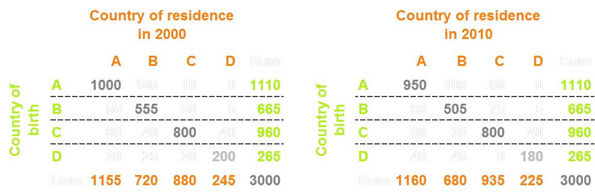
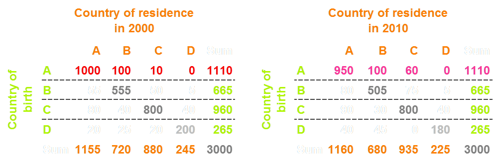

Quantifizierung, Visualisierung und Kommunikation von
globalen Wanderungsströmen
Nikola Sander
Vienna Institute of Demography (ÖAW)
DGD Jahrestagung, Berlin, März 2015
Slides: nikolasander.com/dgd2015
Zuwanderung in den Schlagzeilen
Wie hoch ist der Anteil der Weltbevölkerung der zwischen 2005 und 2010 in ein anderes Land migriert ist?
Quantifying Global International Migration Flows
Guy Abel & Nikola Sander.
Veröffentlicht in Science am 28. März 2014; Vol 343: 1520-1522.

Bezifferung globaler Migrationsströme
Ist äußerst schwierig!
Messung von Migrationsströmen variiert von Land zu Land
Vergleich nationaler Daten ähnelt dem zwischen Äpfeln und Birnen
Harmonisierte Daten nur für Europa, z.B. IMEM
Bezifferung der im Ausland geborenen Bevölkerung
Ist deutlich einfacher!
Geburtsland wird in Völkszählungen und Registern erfasst.
UNO hat 2013 einen globalen, bilateralen Datensatz veröffentlicht.
Aber: akkumulative Werte die keine akutellen Wanderungstrends abbilden.
Neues Modell für die Berechnung von Migrationsströmen
UNO BestandsdatenTransitionen zwischen 1990, 2000, 2010 ~220 Länder |
➜ |
Neue SchätzungenTransitionen zwischen 1990-95 bis 2005-10 196 Länder |
Hypothetisches Beispiel: Bestandsdaten im Jahr 2000

Bestandsdaten in den Jahren 2000 und 2010
Bestandsdaten in den Jahren 2000 und 2010
Von Bestandsdaten zu Migrationsströmen

Von Bestandsdaten zu Migrationsströmen

Geschätzte Migrationsmatrix

Globale Migration stabil bei 0,6 % der Weltbevölkerung

Klassische Visualisierung von Migrationsströmen
Circular Migration Plot
Wanderungen zwischen 60 Ländern
über den Zeitraum 2005-10
Wissenschaftskommunikation gewinnt an Bedeutung
“Scientists must learn to communicate with the public, be willing to do so and indeed consider it their duty to do so.”
Royal Society, 1985
"The Global Flow of People"
Programmierung (d3.js) von Null2 Berlin
Starkes Medieninteresse und positives Feedback über soziale Netzwerke
Fantastic visualization of global migration data. I'm on there if you zoom in a lot.
#SomeoneTellMarineLePen African migrants aren't invading us, and here's the data to prove it
Fazit
Migration ist ein komplexes Phänomen das zunehmend an Bedeutung gewinnt
Kaum Lehrstühle für Demographie / Bevölkerungsgeographie an deutschen Hochschulen
Erstmals gelingt die Bezifferung und Visualisierung globaler Migrationsströme
Globale Migration stabil bei 0,6 Prozent
Datenvisualisierung als Brücke zwischen Wissenschaft, Politik und Öffentlichkeit!?
Binnenwanderung in Deutschland
im Jahr 2010 (Link)
nikola.sander@oeaw.ac.at
@nikolasander